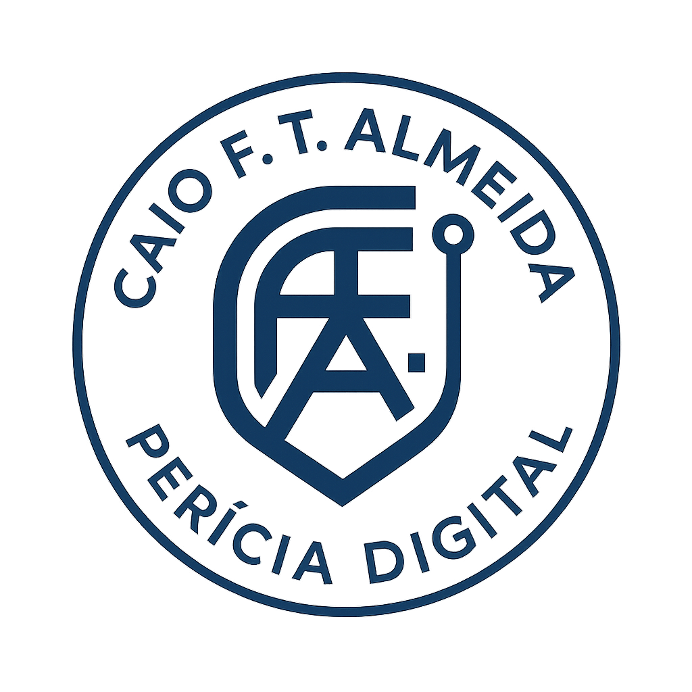

Esta página constitui um ponto oficial de identidade institucional e técnica, publicado em rede descentralizada (IPFS) e vinculado a domínio Web3.
Seu objetivo é atuar como âncora pública de autenticidade, autoria e integridade, referenciando exclusivamente vínculos oficiais e documentos institucionais.
Determinados documentos técnicos e evidências digitais utilizam mecanismos de verificação pública de integridade, baseados em hashes criptográficos e publicação em rede descentralizada (IPFS).